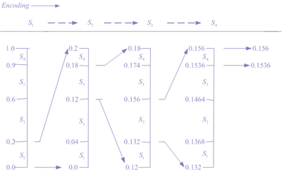
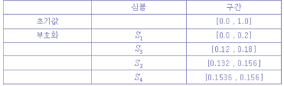
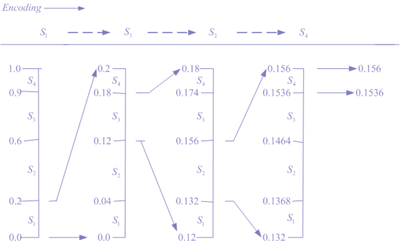
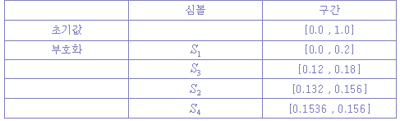

산술 부호화에서는 입력 심볼 자체가 0에서 1사이의 실수 구간을 정의한다. 입력 심볼들이 길어질수록 이것을 나타내는 간격이 좁아 진다. 비트의 수는 간격의 크기를 표시한다. 그리고 심볼들의 수가 증가할수록 이를 나타내기 위해 사용되는 구간은 점점 적어지고, 구간을 나타내기 위한 정보 비트의 수는 증가한다. 심볼의 각 발생 확률에 따라 구간의 크기를 줄여 나간다. 이러한 산술 부호화를 예를 들어 설명한다. 다음과 같은 심볼을 가지는 경우, 산술 부호화 과정을 보인다.
 [그림 1] 심볼과 확률 값
◆ 부호화의 알고리즘
① 현재의 심볼과 확률을 입력한다.
② 범위를 결정한다. (Range=High-Low) ③ 들어온 심볼에 맞는 새로운 Range를 결정한다.
④ New High = Low + Range 들어온 심볼 확률
⑤ New Low = Low + Range 전 과정의 심볼 확률(없으면 0)
◆ 복호화의 알고리즘
① 확률 값을 받아들인다.
② 부호화에서 결정한 Range중 어느 Range에 속하는지 결정한다.
③ 그 Range에 속한 심볼을 선택한다.

[그림 2] 산술 부호화 과정

[그림 3] 입력 심볼의 부호화 구간
위의 구간은 입력 심볼이 S1→S3→S2→S4라고 했을 경우의 부호화이다.
[그림 1] 심볼과 확률 값
◆ 부호화의 알고리즘
① 현재의 심볼과 확률을 입력한다.
② 범위를 결정한다. (Range=High-Low) ③ 들어온 심볼에 맞는 새로운 Range를 결정한다.
④ New High = Low + Range 들어온 심볼 확률
⑤ New Low = Low + Range 전 과정의 심볼 확률(없으면 0)
◆ 복호화의 알고리즘
① 확률 값을 받아들인다.
② 부호화에서 결정한 Range중 어느 Range에 속하는지 결정한다.
③ 그 Range에 속한 심볼을 선택한다.

[그림 2] 산술 부호화 과정

[그림 3] 입력 심볼의 부호화 구간
위의 구간은 입력 심볼이 S1→S3→S2→S4라고 했을 경우의 부호화이다.
부호화의 마지막 간격의 범위는 [0.1536, 0.156]으로 결정된다. 부호화를 행할 때 이 간격 사이에 있는 값을 부호화해서 보내고, 복호화를 할때는 이 범위 안에 있는 실수 값 하나만을 받아들이면 된다.
만약 이 사이의 값 0.154를 복호 과정에서 받아들였다면 복호가 어떻게 행해지는지 알아보자. 처음의 과정부터 먼저 0.154가 속해 있는 구간을 찾는다. S1이 선택된다. 그 다음 과정에서 0.154가 속해 있는 구간을 찾으면 S3가 선택된다. 이러한 방법으로 S2,S4가 차례대로 찾아낼 수 있다. 여기에서 중요한 사실을 알아낼 수가 있다. 0.1536과 0.156 사이의 실수 중 어느 값을 부호화해서 보낼 것인가의 문제가 발생한다. 여기에서는 최대한 유효 숫자가 적도록 만들어야 하고, 다른 구간하고 겹치지 않도록 설정해야 한다. 여기에서는 0.154 또는 0.155 등등 그중 하나를 부호화 할 수 있다. 그리고 각 메시지를 구분하기 위해 필요한 메시지의 끝을 표시하는 부호의 추가가 필요하다. 유효 숫자가 길어지면 반올림하여 부호화하는 방법도 생각해 볼 수 있다.